Территория, баня и мангал
Дом №1 и Дом №2 стоят на общей большой территории — между ними нет забора. Здесь баня, мангальная зона, беседка, детская площадка и место для костра. У дома через дорогу — своя отдельная территория.
Двор и зоны отдыха
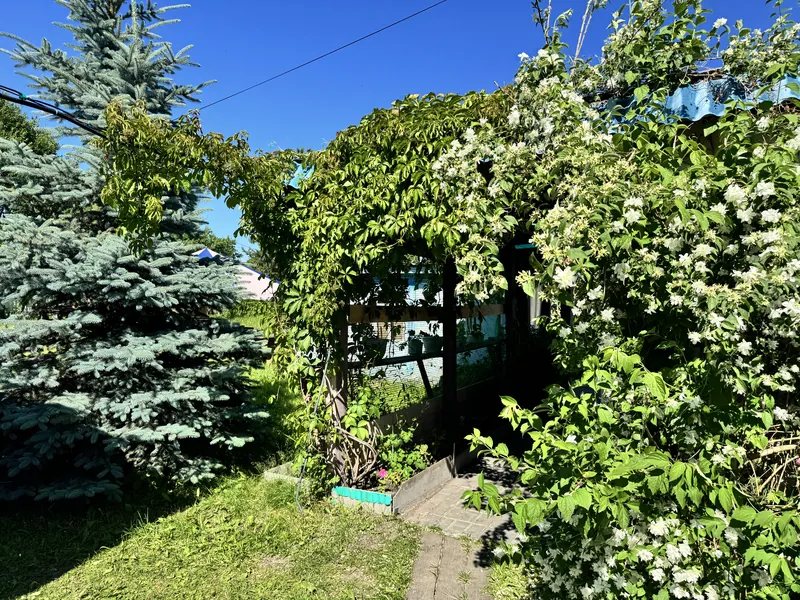
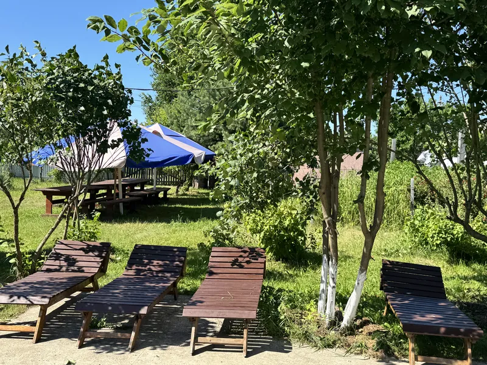
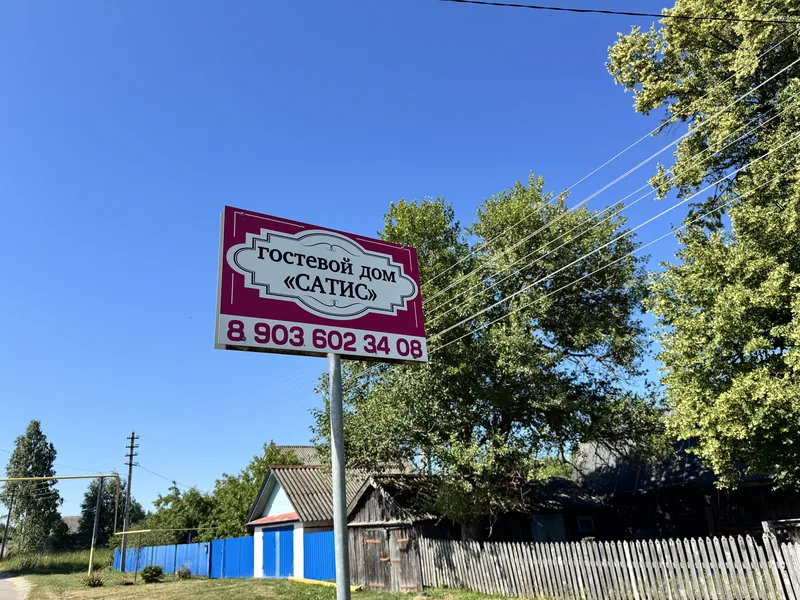
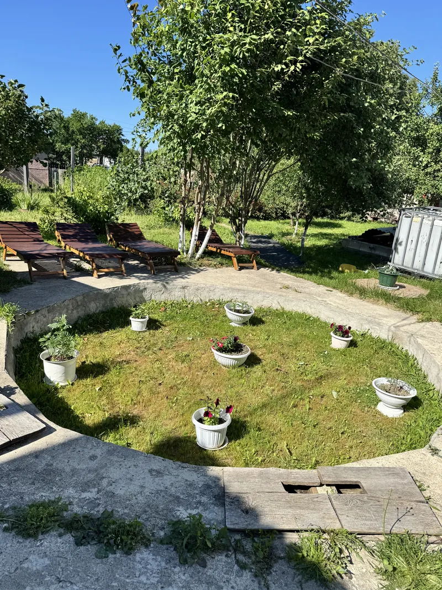
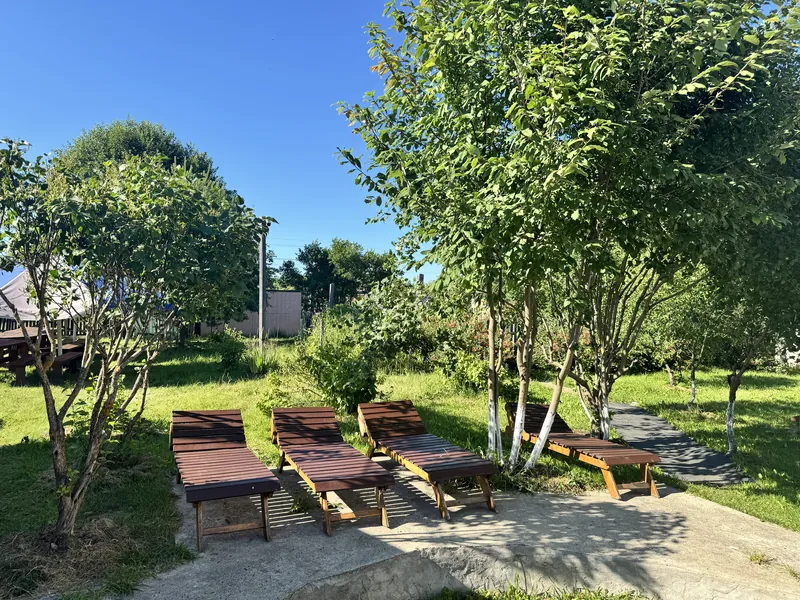
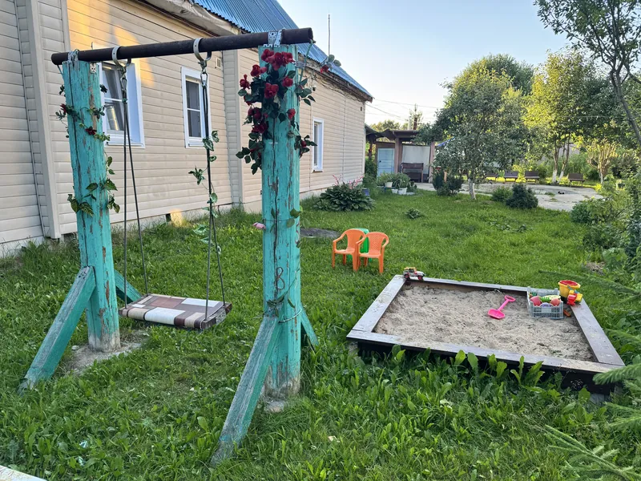
Беседка и мангальная зона
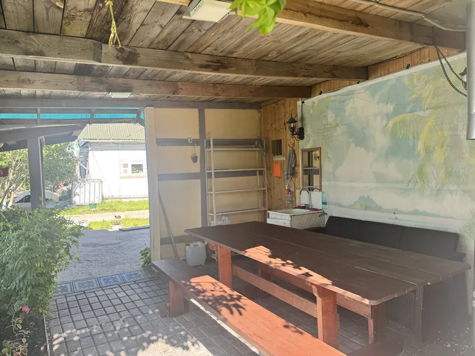
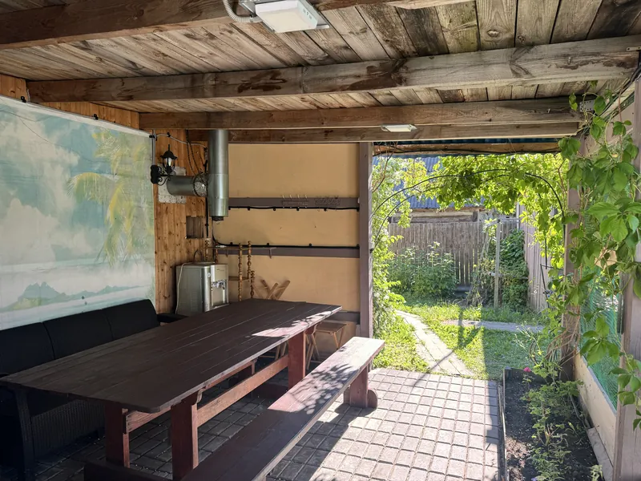
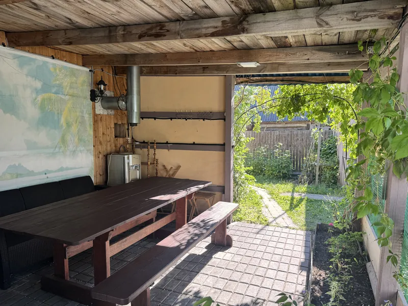
Баня при Доме №1
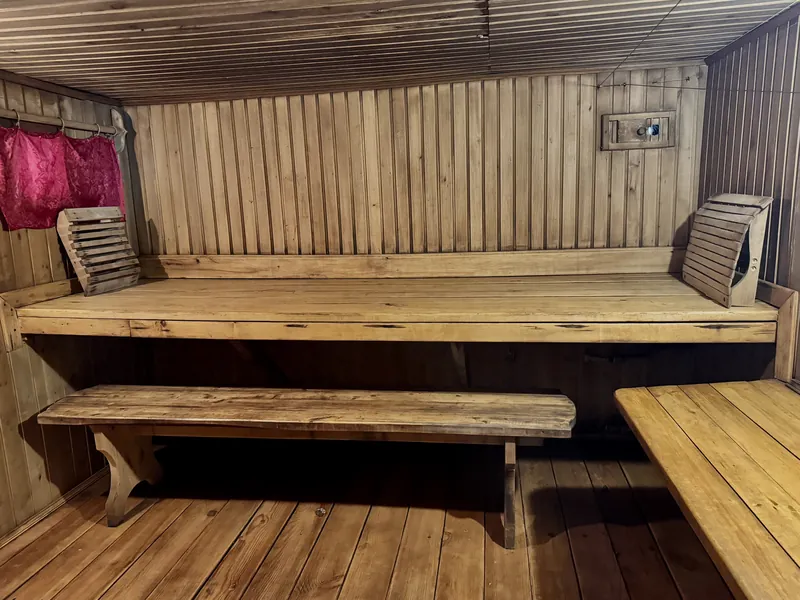
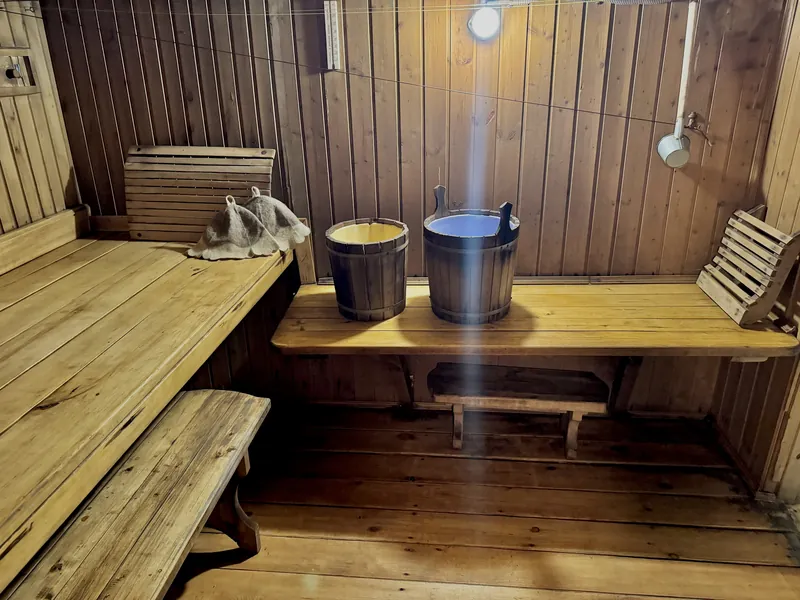
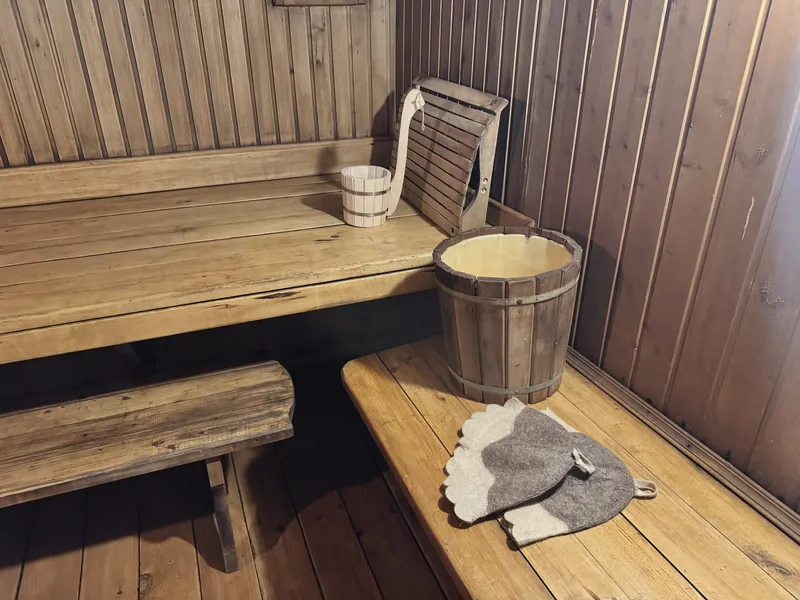
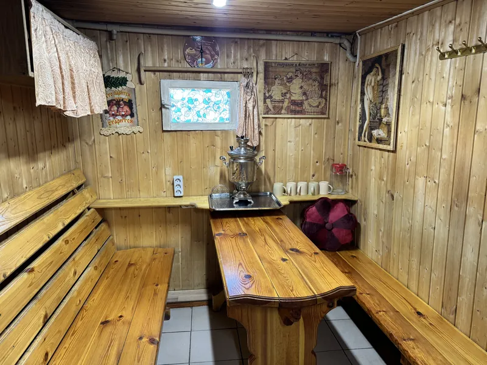
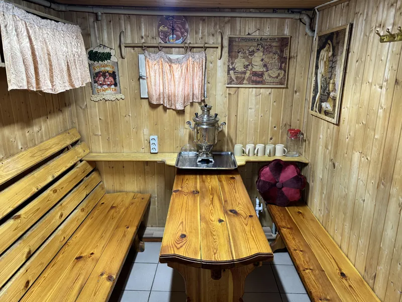
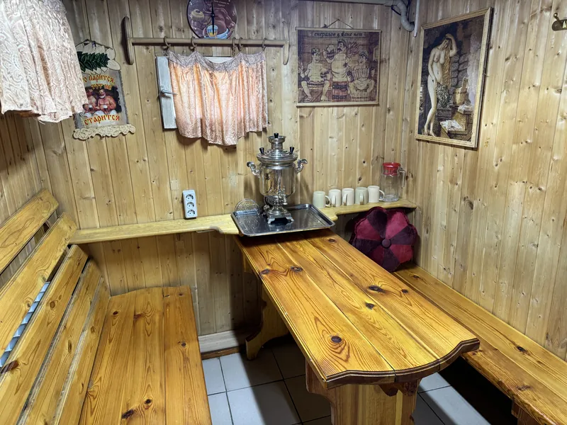
Баня при Доме №2
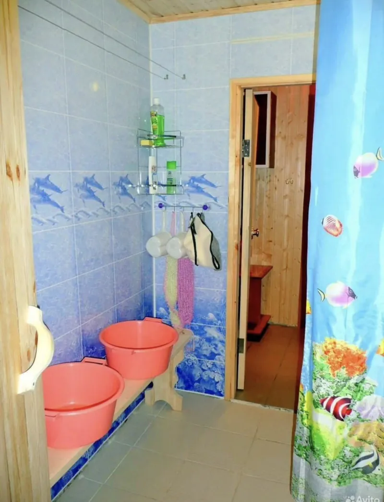
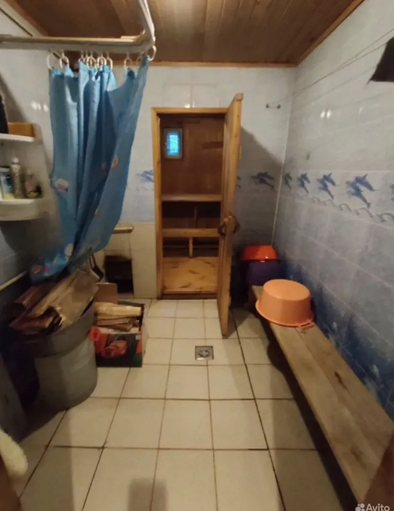
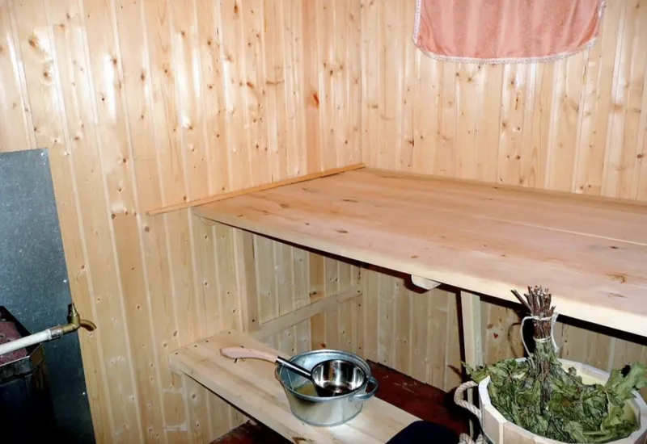
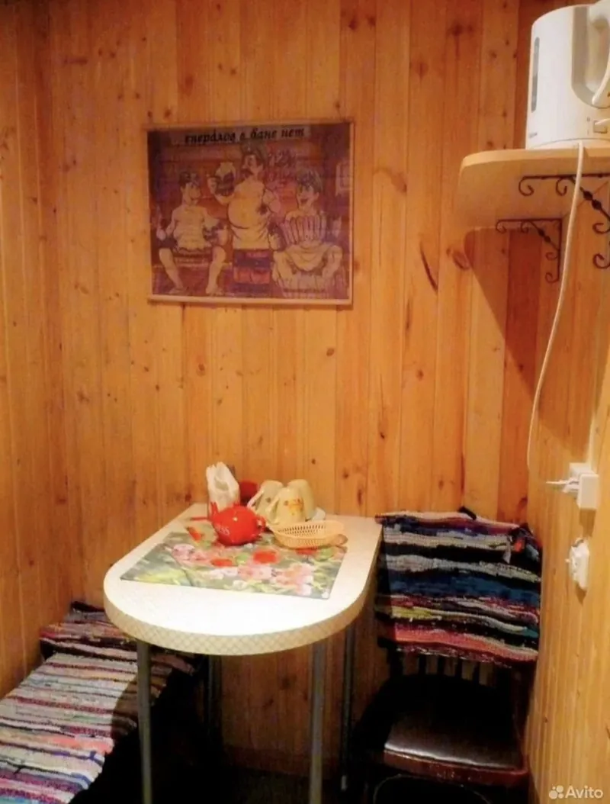
Баня
Две бани — при Доме №1 и при Доме №2. Бронируются отдельно от проживания, минимум на 2 часа. Топим, чистим и готовим баню сами — вы приходите в готовую.
Баня при Доме №1
3 000 ₽ за 2 часа, до 6 человек. Отдельный вход, свой санузел и душ
Баня при Доме №2
до 3–4 человек, стоимость уточняйте. На первом этаже, с душем и отдельным входом
Минимум 2 часа
баня готова к вашему приходу: натоплена и убрана
Что есть на территории
Мангальная зона
у Дома №1 и Дома №2, отдельный мангал у дома через дорогу
Беседка
на общей территории больших домов
Место для костра
оборудованная зона на месте бывшего бассейна
Детская зона
качели, песочница и игрушки
Парковка
3–4 машины на территории и ещё около десяти рядом
Ворота и камеры
территория закрывается, ведётся видеонаблюдение
Много места для прогулок
большая территория, можно гулять и играть
«Кошкин дом»
зимний домик для наших кошек — детям обычно нравится
Озеро рядом
чистый водоём в пешей доступности или в паре минут на машине
Хотите баню на ваши даты?
Забронируем баню вместе с проживанием или отдельно — напишите нам.